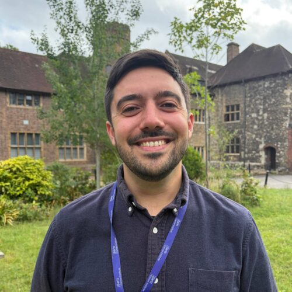
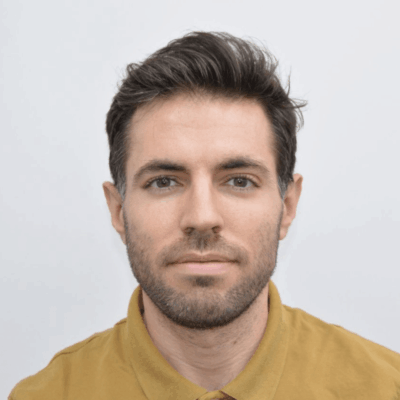
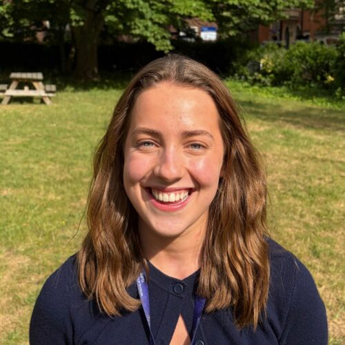
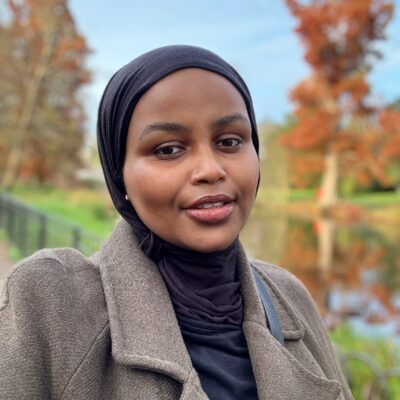

Our people
Different perspectives.
Shared curiosity.
A growing team of experimental and computational researchers at Barts Cancer Institute.
Meet the group leader

Principal investigator
Dr Oscar Maiques
Lecturer and Group Leader in Digital Pathology
PhD, FHEA
Oscar leads the lab at Barts Cancer Institute, connecting extracellular matrix biology, 3D cancer models and AI-driven pathology.
He established the group in April 2024 through the Barts Precision Medicine Programme.
The team
People behind the questions.
Postdoctoral researcher

Eve Guild
B-cell dynamics and extracellular matrix topography in melanoma.
Second supervisor: Prof Sophia Karagiannis
BCI profilePhD student · BBSRC
Bahar Sevgin
Uncertainty-aware multimodal deep learning for ambiguous biological boundaries in melanoma.
Second supervisor: Dr Ziquan Liu
BCI profileSayali Dinesh Shinde
Industry-linked doctoral research with Panakeia Technologies.
Second supervisor: Prof Claude Chelala
BCI profile
Shukri Xalane
BCI profileJoin the conversation
Bring your perspective.
Interested in spatial biology, cancer mechanobiology or AI? We welcome enquiries from prospective students and collaborators.